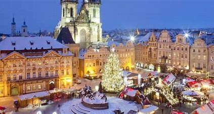
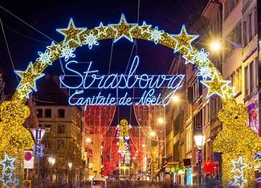
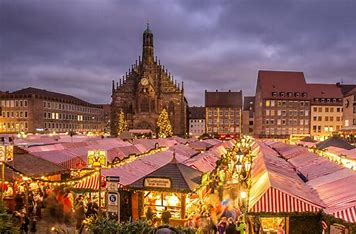
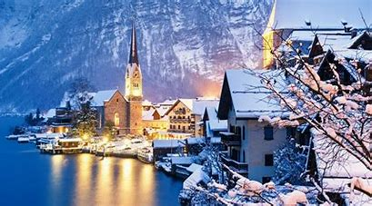
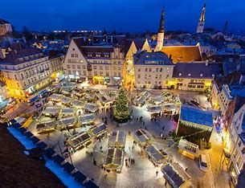

ΟΙ ΚΑΛΥΤΕΡΟΙ 5 ΠΡΟΟΡΙΣΜΟΙ ΓΙΑ ΤΑ ΧΡΙΣΤΟΥΓΕΝΝΑ
Τα Χριστούγεννα όπως όλοι ξέρουμε είναι η καλύτερη εποχή του χρόνου.
Λαμπάκια, στολίδια, δώρα, αγάπη και προφανώς καλοπέραση. Με αφορμή λοιπόν
τα Χριστούγεννα ας δούμε 5 από τους πιο ωραίους προορισμούς για τα
Χριστούγεννα στην Ευρώπη.
Top 5
- Πράγα, Τσεχία
- Στρασβούργο, Γαλλία
- Νυρεμβέργη, Γερμανία
- Βιέννη, Αυστρία
- Τάλιν, Εσθονία
1.Πράγα, Τσεχία

H Πράγα είναι μία από τις πιο μαγικές πόλεις της Ευρώπης για την περίοδο των Χριστουγέννων. Δεν είναι τυχαίο που συγκαταλέγεται
στις λίστες με τους κορυφαίους χριστουγεννιάτικους προορισμούς και φυσικά θα συμφωνήσω.Χριστουγεννιάτικες αγορές, φώτα στα
πλακόστρωτα δρομάκια, στολισμένες γέφυρες, νόστιμες λιχουδιές, ζεστό κρασί και φωτισμένα αξιοθέατα είναι μερικά από τα
χαρακτηριστικά των Χριστουγέννων στην πρωτεύουσα της Τσεχίας.
2.Στρασβούργο, Γαλλία

Το Στρασβούργο την περίοδο των Χριστουγέννων φοράει τα καλά του και υποδέχεται τα πλήθη των επισκεπτών που αναζητούν
τον ιδανικό χριστουγεννιάτικο προορισμό στην Ευρώπη. Η ιστορική πρωτεύουσα της Αλσατίας μεταμορφώνεται σε ένα
παραμυθένιο σκηνικό, φιλοξενώντας μία από τις πιο δημοφιλείς χριστουγεννιάτικες αγορές της Ευρώπης – τη Christkindelsmärik –
και διατηρώντας εδώ και χρόνια τον τίτλο “Πρωτεύουσα των Χριστουγέννων“.
3.Νυρεμβέργη, Γερμανία

Η ομορφότερη γιορτή του χρόνου πλησιάζει και οι πόλεις παραδίνονται η μία μετά την άλλη στη γοητεία των Χριστουγέννων,
με φανταχτερά χρώματα, αρκετό κρύο και κατάλευκες στέγες. Αν θα μπορούσαμε να ξεχωρίσουμε μια πόλη ανάμεσα στις τόσες
στολισμένες, αυτή σίγουρα θα ήταν η Νυρεμβέργη. Το γιατί θα το ανακαλύψετε παρά κάτω… Είναι η πόλη που διαθέτει την πιο
φημισμένη Χριστουγεννιάτικη αγορά που λαμβάνει χώρα στην κεντρική πλατεία και την οποία επισκέπτονται κάθε χρόνο εκατοντάδες
επισκέπτες από όλο τον κόσμο.
4.Βιέννη, Αυστρία

Η Βιέννη αποτελεί έναν από τους πιο επισκέψιμους χριστουγεννιάτικους προορισμούς στην Ευρώπη. Η αυτοκρατορική αρχιτεκτονική της
και η πόλη που ντύνεται με λαμπερά φώτα, αποτυπώνουν την απόλυτη χριστουγεννιάτικη ατμόσφαιρα. Με την πρώτη περιπλάνηση στην πόλη
θα αντικρίσετε τις Χριστουγεννιάτικες Αγορές για τις οποίες φημίζεται η Βιέννη, τους εντυπωσιακούς στολισμούς και τις γιορτινές
συναυλίες ενώ στη μύτη σας θα φτάνουν μυρωδιές από ψημένα κάστανα και ζεστό κρασί.
5.Τάλιν, Εσθονία

Ένας από τους ωριμότερους προορισμούς για τις γιορτές, είναι αναμφίβολα το πανέμορφο Ταλίν, η πρωτεύουσα της Εσθονίας.
Η υπαίθρια χριστουγεννιάτικη αγορά ανακηρύχθηκε ως η καλύτερη για το 2019!Αψηφώντας το κρύο - μέση θερμοκρασία -2 βαθμοί Κελσίου-
και ντυμένοι με ζεστά ρούχα και αξεσουάρ, μπορείτε να δείτε το μεσαιωνικό κέντρο της πόλης στολισμένο και πιθανότατα χιονισμένο.
Περπατήστε στα στολισμένα σοκάκια της μεσαιωνικής πόλης με τους πύργους, τις εκκλησίες και τα τείχη και κατευθυνθείτε στην πλατεία
του δημαρχείου. Εκεί στολίζεται το μεγαλύτερο δέντρο της πόλης, λειτουργεί η υπαίθρια χριστουγεννιάτικη αγορά αλλά και πίστα για πατινάζ.